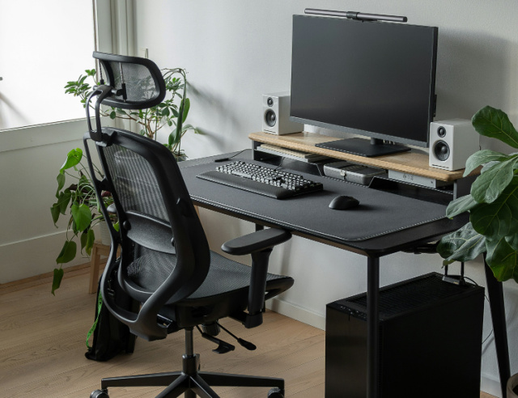
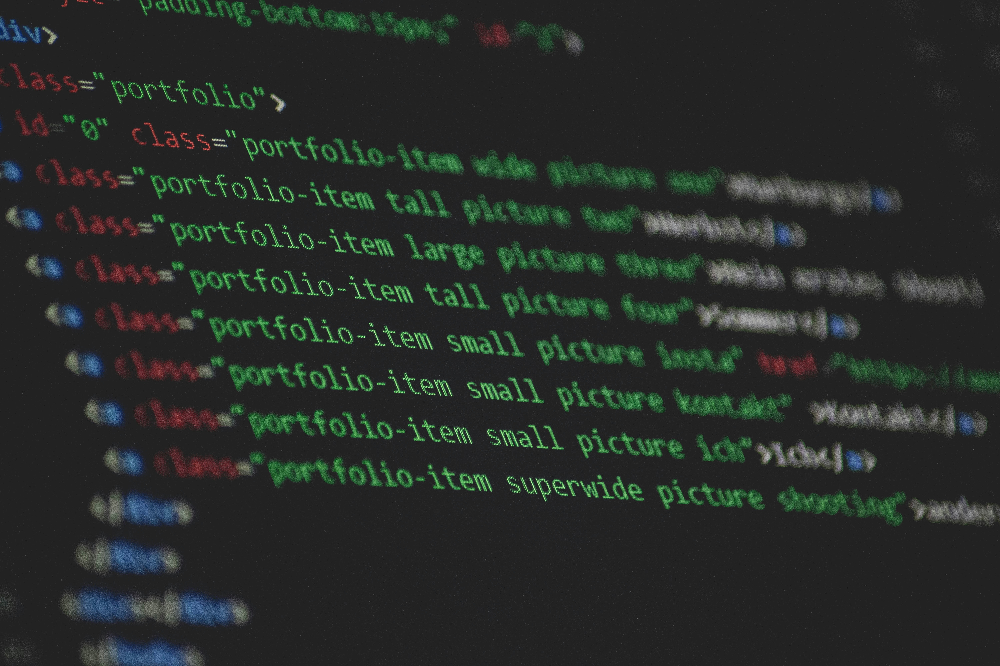

Projects
Freelance - IT Consultant
Social Media Network Startup, Project Manager (01/2024-Present) Conducted a comprehensive review and assessment of initial project achievements. Documented requirements for project continuation with updated goals. Organized project tasks and timelines into a cohesive plan.
Website Creation & Maintenance, IT Consultant (06/2023-Present) Reviewed and updated outdated modules and plugins. Modernized website functionalities to enhance user experience. Corrected bugs and fixed broken links. Optimized images and integrated booking software. Ongoing maintenance.
Link
McCain Foods Limited - Product Owner/Senior Business Analyst
Digital Agriculture Data Modernization, Project Manager/Business Analyst (01/2022-01/2023) Migrated a 20-year-old data warehouse to Azure Cloud and Power BI. Modernized data pipelines with Informatica Cloud; introduced self-service reporting. · Oversaw project scope, timelines, budget; negotiated third-party partner selection. · Served as Product Owner, facilitating Agile/Scrum activities. · Analyzed and Documented Requirements, resolved technical issues and QA testing. · Technology Stack: Agile, MS SQL, Azure SQL MI, Synapse, Informatica Cloud, Power BI.
Mobile App Revitalization for Digital Agriculture, Product Owner/Business Analyst (03/2021-11/2021) Updated and migrated MVP mobile app; integrated new data model. Implemented 95% of backlog items; enhanced reporting in Power BI. Awarded for achieving 160% of my latest fiscal performance targets. · Managed development team, timelines, budgets, backlog, and release coordination. · Documented/Prioritized requirements, QA testing, Change Management & User Training. · Technology Stack: Agile, OutSystems, Azure APIs, Function Apps, SQL MI, DevOps, Power BI.
Link
McCain Foods Limited - Project Manager/Senior Business Analyst
Global Procurement Application Quality Assurance, Project Manager (04/2019-01/2020) Directed COUPA implementation testing for North America, including SAP integrations and created Excel-based audit reports. · Organized and streamlined testing scripts, utilizing HP ALM for testing structure. · Oversight of test-planning, resources, progress, and issue resolution. · Technology Stack: Waterfall, COUPA, SAP, Excel w/VBA, HP ALM.
Integrated Supply Chain Finance Reporting Automation, Project Manager (08/2018-11/2018) Facilitated a 5-day workshop with stakeholders, SMEs & vendor, establishing precise project requirements and securing capital for the successful automation of 15 month-end reports. · Conducted requirements gathering and analysis; documented results. · Managed development team efforts, performed all unit testing and facilitated user testing. · Technology Stack: Waterfall, SAP, Excel w/VBA, Teradata, MicroStrategy.
Link